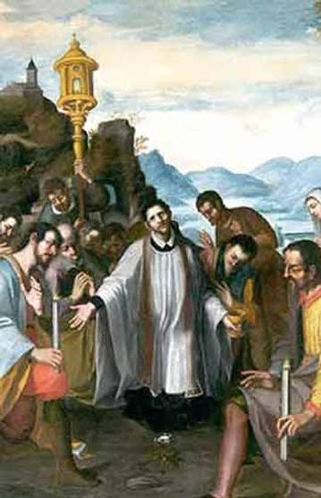
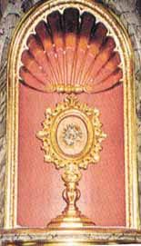

The 1447 Eucharistic miracle of Ettiswil, Switzerland, involved a stolen consecrated Host that mysteriously transformed into the shape of a flower, split into seven pieces, and radiated brilliant light.
After a stolen Host was abandoned in a field by a perpetrator, it was discovered by a young girl, suspended in mid-air and glowing. It had perfectly divided into seven interconnected pieces resembling a flower. When the priest arrived, six pieces were easily retrieved, but the central piece remained firmly fixed to the ground, serving as a divine command for the community to construct a shrine at that exact location.
A sanctuary was quickly erected in 1448 to honor the miracle. The event received official Church recognition, and the shrine continues to draw pilgrims from around the world, serving as a powerful witness to the sanctity of the Eucharist in the heart of Switzerland.